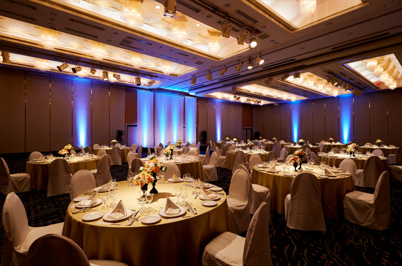

35年分の「久しぶり」を、
あの日のままの笑顔で。
2026.8.14 FRI
1991年卒 石部中学校 同窓会
4/30時点の参加予定者：？？人
開催概要
同窓会（一次会）
- 📅日時
-
2026年8月14日（金）
11:30 受付開始 / 12:00 開会 / 14:30 閉会 - 💴会費
- 10,000円（当日現金支払い）
- 📍場所
-
クサツエストピアホテル
〒525-0037 滋賀県草津市西大路町4-32
（JR琵琶湖線 草津駅西口より徒歩3分）

2次会
- 📅日時
- 同日 15:00 ～ 17:00
- 💴会費
- 2,000円（当日現金支払い・軽食）＋ キャッシュオンデリバリー
- 📍場所
-
カフェ＋バル フィオーレ
滋賀県草津市大路1-15-39
出欠のご確認
人数を早めに把握したいため、現時点でのご意向で構いませんので、早めにご入力いただけると助かります。
（最終確定は 7月31日 となります。）
※Googleアカウントにログインして入力いただけると期日までは内容の変更が可能です。
出欠入力フォームへ進むよくあるご質問
招待対象者は誰ですか？
卒業アルバムに載っている同級生を中心に、幹事が連絡を取れる範囲でお声掛けしています。もし卒業アルバムにはいなくても、途中で転校された方で連絡先をご存知の方がいらっしゃればぜひお声掛けをご協力お願いします！参加の旨は大歓迎です。
このサイトを同級生に案内していいですか？
ぜひお願いします！1991年卒業の同級生であれば大歓迎です。案内する際は、ログインに必要な「合い言葉」も一緒に知らせてあげてください。
服装に決まりはありますか？
平服（スマートカジュアルなど、ご自身がリラックスして楽しめる服装）でお気軽にお越しください。
会費の支払い方法は？
当日の受付にて「現金」でお支払いください。釣銭のないようご準備いただけますと大変助かります。※クレジットカードや電子マネーは不可となります。
車で行ってもいいですか？
はい、ホテルの駐車場に止めていただけます。ただし、お酒を飲まれる方の運転は固くお断りいたしますので、その場合は代行運転等をご利用ください。
立食ですか？
全員分のお席をご用意し、着座での形式となりますが、コース料理ではなくビュッフェスタイルですので、自由に移動していただけます。ゆっくりとお食事と歓談をお楽しみください。
席はどのようにして決まりますか？
最初は幹事側でランダムに決めさせていただきますが、乾杯以降は自由に席を移動してもらえるようにいたします。
先生も参加されますか？
中1から中3までの担任の先生や、当時お世話になった先生方にお声掛けをしています。
誰が来るのか知りたいです。
具体的な参加者名につきましては、個人情報の観点からお知らせしておりません。ただし、全体の参加予定人数につきましては、随時このサイトのトップにて公開してまいります。
2次会に行くかはその場で決めたいのですが…
当日参加の場合でも参加できるように若干の余裕を見ておきますが、当日の人数状況によっては急遽の参加ができない場合があります。確実に参加したい場合は、予め「参加予定」として希望を出しておいてください。
卒業以来連絡を取ってる人がいないので、一人ぼっちになりそうで心配です。
大丈夫！35年ぶりの再会ですので、誰もが同じように不安を少し抱えているはずです。当日はわかりやすい名札を用意するなど、話しやすい工夫を考えていますので、安心してお越しください。
子どもを連れて行っていいですか？
申し訳ありませんが、会場の都合と、大人のみで当時を懐かしむ場とさせていただきたいため、お連れ様・お子様のご参加はご遠慮いただき、同窓生ご本人のみのご参加とさせていただきます。
当日急に都合が悪くなったらどうしたらいいですか？
8月11日までにご連絡いただければ調整いたします。それ以降のキャンセルにつきましては、申し訳ありませんが後日会費をご請求させていただきます。
Googleアカウントってなんですか？
Googleが無料で提供しているサービス（Gmailなど）を利用するためのアカウントです。出欠フォームの入力間違いなどを後からご自身で修正できるようにするため、ログインをお願いしております。
Googleアカウントを持っていないのですが、一度入力したらもう変えられませんか？
アカウントをお持ちでない場合、ご自身での直接の修正はできなくなりますが、幹事へ直接ご連絡いただければこちらで内容を変更いたしますのでご安心ください。
入力した個人情報はどのように扱われますか？
ご入力いただいた個人情報は厳重に管理し、今回の同窓会の出欠確認、および今後同様の同窓会が開かれる際のご連絡にのみ使用いたします。それ以外の目的で使用することはありません。
本同窓会に関する問い合わせ窓口はありますか？
お問い合わせは以下のメールアドレスまでお願いいたします。
yoshikawa@nobuyuki.tv （幹事：吉川信幸）